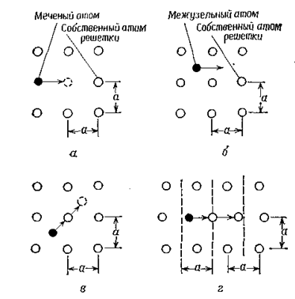
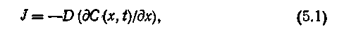
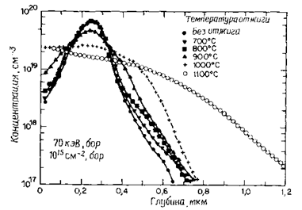
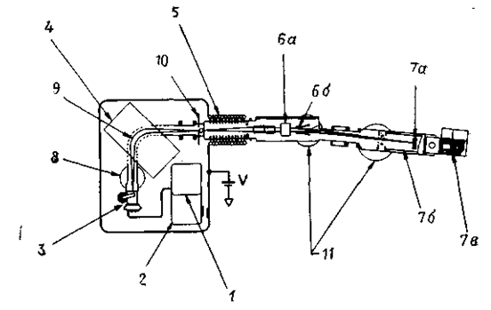
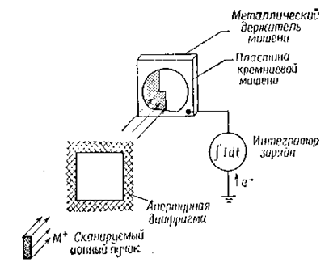
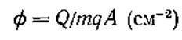
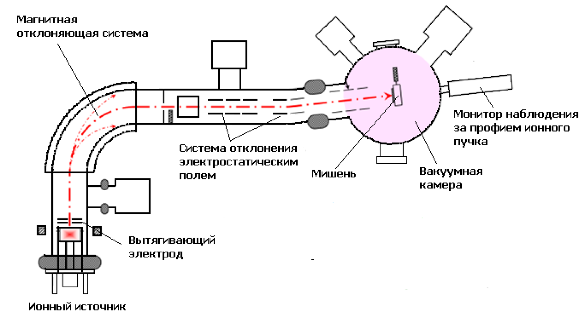
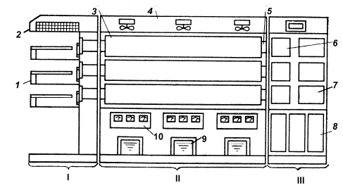
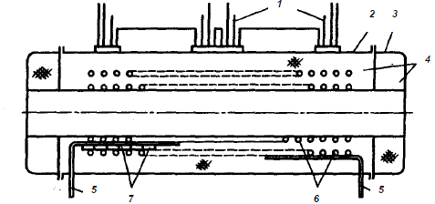

электронный
ресурс по учебной дисциплине 1-58 01 01 - "ИНЖЕНЕРНО-ПСИХОЛОГИЧЕСКОЕ ОБЕСПЕЧЕНИЕ ИНФОРМАЦИОННЫХ ТЕХНОЛОГИЙ"
|
||
| Оглавление | Программа | Теория | Практика| Контроль знаний | Об авторах | ||
|
Содержание
ТЕМА 5 ДИФФУЗИЯ И ИОННАЯ ИМПЛАНТАЦИЯ ПРИМЕСЕЙ § 5.1 Технология проведения диффузии § 5.2 Технология ионной имплантации § 5.3 Технологическое оборудование для диффузии и ионной имплантации § 5.1 Технология проведения диффузии Модели диффузии в твердом теле. В объеме монокристаллического твердого тела при высоких температурах возникают точечные дефекты, такие, как вакансии и межузельные атомы. В тех случаях, когда существует градиент концентрации собственных или примесных атомов, наличие точечных дефектов оказывает влияние на перемещение атомов, т. е. на их диффузию. Диффузия в твердом теле может быть представлена как движение атомов диффузанта в кристаллической решетке за счет вакансий или межузельных атомов. На рис. 5.1 с помощью упрощенной двумерной кристаллической решетки с параметром решетки а схематически показаны основные атомные модели процесса диффузии.  а – вакансионный механизм; б – межузельный механизм, механизм непрямого перемещения межузельной конфигурации (эстафетный механизм); г – краудионный механизм Рисунок 5.1 – Модели атомных механизмов диффузии для двумерной решетки (а – постоянная решетки) Собственные атомы, занимающие при низкой температуре узлы решетки, представлены светлыми кругами. Темные круги обозначают либо собственные, либо примесные атомы. При повышенной температуре атомы в узлах решетки колеблются вблизи равновесного положения. Время от времени они приобретают достаточную энергию для того, чтобы удалиться от указанного положения в узле решетки, и становятся межузельными атомами, оставляя в решетке вакансию. Такой механизм диффузии, когда соседний атом, будь то атом примеси или собственный атом кристалла, мигрирует на место вакансии, называется вакансионным (рис. 5.1,а). Если мигрирующий атом является собственным атомом, то процесс диффузии называют самодиффузией, а если примесным, — примесной диффузией. Эксперименты по самодиффузии обычно проводят путем введения радиоактивных изотопов собственных атомов в кристалл (рис. 5.1,а). Механизм диффузии, при котором атом переходит из одного положения в другое, не попадая при этом в узлы кристаллической решетки, называется механизмом прямого перемещения атомов по междоузлиям (рис. 5.1, б). Реализация этого механизма наиболее вероятна в случае диффузии атомов малых размеров. Энергия активации, необходимая для диффузии межузельных атомов, ниже энергии активации для диффузии атомов решетки по вакансионному механизму. На рис. 5.1,в показано движение межузельных атомов, когда в процессе перемещения они вытесняют атом решетки и замещают его; вытесненный атом в свою очередь становится межузельным. Такое перемещение собственных или примесных атомов называют механизмом непрямого перемещения атомов по междоузлиям или эстафетным механизмом. С указанным механизмом непосредственно связан и краудионный механизм, при котором межузельный атом, расположенный посередине между двумя узлами решетки, перемещается к одному из них, смещая при этом атом, расположенный в узле. Вытесненный атом становится межузельным и занимает промежуточное положение в решетке (рис. 5.1,г). Одномерное уравнение диффузии Фика. В 1855 г. Фик предложил теорию диффузии. В основу этой теории положена аналогия между процессами переноса в жидких растворах и тепла за счет теплопроводности. Фик предположил, что в разбавленных жидких или газообразных растворах в отсутствие конвекции перенос атомов через площадку единичной площади при одномерном направлении потока может быть описан следующим уравнением:  где J — скорость переноса растворенного вещества через сечение единичной площади, или диффузионный, поток; С — концентрация растворенного вещества, которая, как предполагается, зависит только от х и t. х — ось координат, совпадающая с направлением потока вещества; t и D — соответственно время и коэффициент диффузии. Уравнение (5.1) показывает, что локальная скорость переноса растворенного вещества (локальная скорость диффузии) через сечение единичной площади за единицу времени пропорциональна градиенту концентрации растворенного вещества, а в качестве коэффициента пропорциональности выступает коэффициент диффузии растворенного вещества. Знак минус в правой части уравнения (5.1) означает, что процесс переноса вещества происходит в направлении уменьшения концентрации растворенного вещества (т. е. градиент отрицательный). Уравнение (5.1) называют первым законом Фика. Коэффициенты диффузии элементов В, Р, As и Sb. В технологии формирования СБИС в качестве легирующих элементов для создания р-n переходов используют бор, фосфор, мышьяк и иногда сурьму. § 5.2 Технология ионной имплантации Достоинства ионной имплантации: 1 Возможность вводить (имплантировать) любую примесь, любой элемент Периодической Таблицы. 2 Возможность легировать любой материал. 3 Возможность вводить примесь в любой концентрации независимо от ее растворимости в материале подложки. 4 Возможность вводить примесь при любой температуре подложки, от гелиевых температур до температуры плавления включительно. 5 Возможность работать с легирующими веществами технической чистоты и даже с их химическими соединениями (тоже любой чистоты). 6 Изотопная чистота легирующего ионного пучка (т.е. возможность легировать не только исключительно данным элементом, но и исключительно данным изотопом этого элемента). 7 Легкость локального легирования (с помощью хотя бы элементарного механического маскирования). 8 Малая толщина легированного слоя (менее микрона). 9 Большие градиенты концентрации примеси по глубине слоя, недостижимые при традиционных методах с неизбежным диффузионным размыванием границы. 10 Легкость контроля и полной автоматизации технологического процесса. Требования к процессу. Крошечные размеры транзистора, который лежит в основе любого микрочипа и который работает на частотах до 3 ГГц требуют высокой точности легирования. Для наиболее чувствительных устройств имплантируемая доза должна быть очень однородна. Тройное стандартное отклонение (Зв) вариации в 1,5% является допустимым верхним пределом. Необходимо согласованно достичь одинаковой однородности на площади пластины до 300 мм в диаметре. Также очень критичным является повторяемость имплантации от пластины к пластине и от партии к партии. Энергия ионного пучка не должна превышать Зв вариации 3% по всем пластинам. Угол падения ионного пучка на поверхности пластины также необходимо тщательно контролировать для предотвращения вариации позиции легирующих атомов. Вариации глубины проникновения легирующих элементов также должны являться предметом пристального интереса. Тройное стандартное отклонение вариации в 1 % для угла имплантации обычно достаточно для производства воспроизводимых характеристик электронных устройств. Обобщение результатов исследования поведения имплантированных примесей при отжиге структур. Для проверки основных предположений, объясняющих поведение примесей бора и фосфора в кремнии при отжиге имплантированных структур, можно провести процесс имплантации бора в не нагретые подложки для формирования аморфных слоев, а фосфора в нагретые подложки для предотвращения образования аморфных слоев. Характер поведения бора и фосфора во время отжига аморфных имплантированных слоев идентичен. При дозе имплантации бора в кремний 1015 см-2, когда имплантированный слой имеет аморфную структуру, не наблюдается явления отрицательного отжига, т. е. уменьшения концентрации свободных носителей заряда во время отжига. Отжиг при температуре 600°С, когда протекает процесс эпитаксиальной перекристаллизации, приводит к достаточно полной электрической активации атомов бора. Поведение атомов бора и фосфора в процессе отжига идентично В заключение следует отметить, что характер поведения имплантированных атомов бора и фосфора идентичен и в случае образования при внедрении ионов аморфных слоев с их последующей твердофазной перекристаллизацией. При отсутствии амортизации монокристаллической подложки в процессе имплантации отжиг, уменьшающий электрическую активность имплантированных атомов, проходит при температуре ~500°С и сопровождается образованием линейных дефектов. Для устранения дислокаций необходима термообработка при температуре в диапазоне 900—1000 °С. Еще одной особенностью отжига имплантированных слоев является возникновение дислокаций небольшого размера в области, соответствующей «хвосту» в профиле распределения, обращенному от поверхности подложки. Для твердофазной эпитаксиальной перекристаллизации аморфных имплантированных слоев, образующихся при создании областей истока и стока в МОП-транзисторах путем имплантации мышьяка, необходимо проведение отжига в температурном диапазоне 600—850 °С; при этом появляются небольшие (~5 нм) дислокации в области, соответствующей «хвосту» в профиле распределения имплантированного мышьяка. Диффузия имплантированных примесей. Диффузия имплантированных примесей в кремнии является сложным процессом даже при отсутствии радиационных дефектов. Важную роль при этом играют термические вакансии кремния (их ассоциированные заряженные состояния) и межузельные атомы кремния, поскольку они действуют в качестве стоков примесных частиц. При исследовании диффузии имплантированных примесей необходимо принимать во внимание образование на дефектах вакансий, межузельных атомов, комплесов вакансия — примесь и линейных дефектов. Рассмотрим структуру, полученную ионной имплантацией бора с дозой 1015 см-2 при комнатной температуре без образования аморфного слоя. На рис. 5.2 показано, что профиль имплантационного распределения расширяется в области «хвоста» (отжиг в температурном диапазоне 700—800 °С в течение 35 мин), тогда как концентрационный пик остается резким. Этот диффузионный «хвост» в профиле распределения аномально велик по сравнению с расчетным, полученным на основании опубликованных значений коэффициента диффузии бора в кремнии. Коэффициент диффузии бора может быть повышен за счет уничтожения кремниевых вакансий и межузельных кластеров, при этом вакансии могут увеличить коэффициент диффузии по узлам кристаллической решетки, а межузельные атомы кремния могут вытеснять атомы бора из узлов кристаллической решетки, что приведет к быстрой диффузии комплексов межузельный атом кремния — атом бора. Неразмытому пику концентрации в профиле распределения соответствует область с неупорядоченной структурой, которая не устраняется при отжиге в температурном интервале 700—800 °С.  Рисунок 5.2 – Зависимость концентрации атома бора от температуры отжига; время отжига 35 минут Во время отжига при температуре 900°С происходит размытие концентрационного пика, тогда как атомы бора, соответствующие ниспадающим участкам профиля распределения, занимают достаточно устойчивые положения. Это явление можно объяснить тем, что дислокации, располагающиеся в области пиковой концентрации примеси в профиле распределения, начинают отжигаться с образованием кремниевых вакансий и межузельных атомов, которые могут ускорять диффузию атомов бора. Профиль распределения имплантированного бора после отжига структуры при температуре 900°С в течение 35 мин может быть описан с помощью эффективного коэффициента диффузии, который в ~3 раза превышает нормальную величину коэффициента диффузии бора в кремнии при температуре- 900 °С (3*10-14 см2/с и соответственно 1*10—14 см2/с). Во время отжига при температуре 1000 °С происходит дополнительное термическое размытие профиля распределения легирующей примеси, однако это размытие может быть объяснено обычной теорией диффузии. Коэффициент диффузии примеси не зависит от концентрации имплантированных атомов. Термические вакансии и межузельные атомы во время диффузионного перемещения могут образовывать преципитаты. § 5.3 Технологическое оборудование для диффузии и ионной имплантации На рис. 5.3 схематически показана промышленная установка для проведения процесса ионной имплантации. Она состоит из следующих компонентов: 1. Газовый источник соответствующего вещества, такого, как BF3 или AsH3, находящийся под высоким напряжением. Регулируемый вентиль, управляющий потоком газа, направляемого к источнику ионов. 2. Блок питания ионного источника, также находящийся под высоким напряжением. 3. Источник ионов, содержащий ионную плазму частиц +As75, +В11 или +BF249 при давлении ~1 Па. Диффузионный насос для создания низкого давления, обеспечивающего перемещение ионов в пучке с малым рассеянием ионизированного газа. 4. Магнитный анализатор ионов по массе, отбирающий только нужные частицы. Эти ионные частицы проходят через разрешающую щель (апертурную диафрагму) и затем попадают в ускоряющую трубку. 5. Ускоряющая трубка, после прохождения которой ионный пучок подготовлен к бомбардировке мишени. 6. Отклоняющие пластины по осям х и у, к которым приложено пилообразное напряжение, для сканирования ионного пучка и обеспечения однородности внедрения ионов по площади мишени. (Для поддержания пониженного давления на пути следования ионного пучка во избежание перераспределения зарядов применяют диффузионные насосы канала пучка и приемной камеры.) 7. Камера мишени, состоящая из апертурной диафрагмы, ловушки Фарадея и механизма перемещения подложки.  1 – газовый источник; 2 – блок питания источника ионов; 3 – источник ионов; 4 – магнитный анализатор ионов по массе; 5 – ускоряющая трубка; 6а – отклоняющие пластины у; 6б – отклоняющие пластины х; 7а – пластина (положение мишени); 7б – ловушка Фарадея; 7в – механизм перемещения подложки; 8 – диффузионный насос источника ионов; 9 – ионный пучок; 10 – апертурная диафрагма; 11 – диффузионные насосы канала пучка в приемной камере Рисунок 5.3 – Схема промышленной установки ионной имплантации DF-3000 фирмы Varina Extroina Введем понятие дозы. Для этого рассмотрим ионный пучок, имеющий массу М, заряд mq (m — кратность ионизации атома; q — заряд электрона) и энергию Е во время его движения через вакуумное дрейфовое пространство по направлению к мишени (рис. 5.4).  Рисунок 5.4 – Схема формирования растра ионного пучка, включающая апертурную цель и мишень Сканирование ионного пучка производится схемой отклонения заряженных частиц для получения однородного распределения имплантируемых атомов по площади мишени. Сканирование пучка ограничено площадью апертурной диафрагмы А. За ней в пределах площади, которая спроецирована на металлический держатель мишени, помещают пластину кремния. Подложка имеет хороший электрический контакт с держателем мишени, который в свою очередь присоединен к интегратору заряда. Электроны проходят через интегратор заряда и нейтрализуют имплантированные ионы, когда те тормозятся в кремнии. Интегрированный заряд Q (кулон) определяет дозу имплантируемых ионов:  5.2 Интегрированный заряд определяется как Q= ∫Idt, где I(A) – ток пучка ионов, протекающий в течение времени t(с). Например, при имплантации с плотностью тока пучка ионов 10-9 А/см2 в течение 1 с получают дозу 0,6-1010 см-2 при m = 1. При толщине имплантированных слоев 60 нм можно управлять концентрацией легирующей примеси на уровне 1015 см-3. Проведение процесса ионной имплантации с величиной тока ионного пучка в несколько миллиампер в течение 100 с позволяет получить концентрацию легирующей примеси ~ 1020—1021см-3 (что соответствует пределу растворимости примесей в кремнии) на пластинах диаметром 100 мм. Современная установка ионной имплантации состоит из ионного источника, который производит ионы нужного элемента из таблицы Менделеева, магнитной системы, где ионы анализируются по их отношению энергии и массы и фильтруются, т.е. на выходе магнита остаются только ионы с требуемым соотношением энергии и массы, ускорителя, т.е. той части оборудования, где ионы электростатически приобретают или теряют энергию, системы отклонения пучка, где пучок ионов направляется по определенному алгоритму и камеры с мишенями, где ионный пучок находит свою цель, соударяясь с материалом мишени.  Рисунок 5.5 – Установка ионной имплантации При производстве полупроводниковых приборов и интегральных микросхем пластины подвергают ряду высокотемпературных обработок, проводимых в диффузионной печи. Температурный интервал диффузионных печей выбирают в пределах, 1000—1300°С. При изменении температуры в этих пределах коэффициент диффузии D, например, для бора и фосфора, отличается на три порядка. Рассмотрим требования к стабильности поддержания заданной температуры диффузионных печей. Следует отметить, что изменение температуры всего на несколько градусов может привести к двухтрехкратному увеличению коэффициента диффузии, а значит, и глубины залегания легирующего слоя. Так, при увеличении температуры через каждые 100°С, начиная от 900°С, коэффициент диффузии увеличивается примерно в пять раз. При конструировании диффузионных печей необходимо учитывать тот факт, что точность поддержания температуры в зоне печи должна быть ±0,5°С, тогда изменение по глубине залегания примесей, например, бора и фосфора в кремнии будет в пределах 1%, что чрезвычайно важно при получении тонких (0,1 мкм) слоев. Необходимость использования высоких температур диктуется также следующими обстоятельствами. Как известно, растворимость примеси в твердых телах и, в частности, в полупроводниках определяется видом примеси и температурой процесса. Чем выше температура, тем выше растворимость. При создании эмиттерной области транзисторов необходимо учитывать тот факт, что концентрация вводимой примеси должна быть порядка 1020—1021 см-3. Такую величину концентрации можно достигнуть при высоких температурах (порядка 1000—1300°С). Технология процессов диффузии, окисления и вжигання в полупроводниковом производстве и особенности эксплуатации оборудования в специальных помещениях с кондиционированием атмосферы определяют следующие требования к оборудованию: диапазон рабочих температур — 800—1300°С; равномерность температур по длине рабочей зоны (от 600 до 1000 мм) — ±0,5°С; 1. малая инерционность; 2. малые габариты; 3. отсутствие необходимости работы с футеровкой печи при смене нагревателей. Для проведения процесса диффузии, исходя из требований высокой чистоты диффузанта, подложки и технологической среды, в качестве камеры диффузионных процессов можно применять кварцевые и алундовые трубы, а также трубы из карбида кремния и поликристаллического кремния. В основном для диффузии используют трубы из плавленого кварца, который имеет высокую степень чистоты в сравнении с обычным кварцем и алундом, небольшие внутренние напряжения, отсутствие больших пузырьков в теле трубы, а также высокую прозрачность для УФ- и ИК-излучений. Высокие параметры плавленого кварца, обеспечивают возможность получения толстостенных труб (6 мм вместо 3 мм), что увеличивает срок их службы. Размер применяемых кварцевых труб зависит от задаваемой производительности печи и диаметра обрабатываемых пластин и может достигать диаметра 0,2 м и длины свыше 2,0 м. Применение алундовых труб для диффузионных процессов сдерживается их недостаточно высокой чистотой, хотя их механические параметры при высоких температурах значительно лучше, чем у кварцевых. Поэтому алундовые трубы используют в диффузионных печах лишь как несущие конструкции, не позволяющие прогибаться вставленной внутрь нее кварцевой трубе, размягчающейся при высокой температуре. В этом отношении трубы из поликристаллического кремния превосходят кварцевые и алундовые, так как имеют высокую чистоту материала, малую проницаемость для щелочных металлов (в виде соединений натрия) и близкий к кремниевым подложкам коэффициент теплового расширения. При этом время работы трубы из поликристаллического кремния при температуре 1300°С почти в пять раз больше, чем у труб из кварца, так как кварц при этой температуре кристаллизуется и теряет механическую прочность. Применение труб из полукристаллического кремния, как и из карбида кремния, сдерживается трудностью их изготовления. Загрузочные кассеты (лодочки) для размещения подложек в диффузионном реакторе обычно делают из того же материала, что и сам реактор. Для диффузионных процессов созданы сложнейшие диффузионные комплексы, включающие в себя, как правило, двух-, трех или шести трубные диффузионные агрегаты с обеспыленными боксами с ламинарными потоками, загрузчиками, газовыми шкафами, а также программаторами или мини-ЭВМ, Функциональная схема автоматизированной трехтрубной печи приведена на рис. 5.6.  I - система загрузки и выгрузки пластин; II - электропечь; Ш - система газовая; 1 - механизм автоматической загрузки; 2 - блок пылезащиты; 3 - нагревательные камеры; 4 - теплообменник; 5 - реакторы; 6 - увлажнители; 7 - устройство подачи диффузанта; 8 - блок подготовки газов; 9 - система силового питания; 10 - система регулирования температуры Рисунок 5.6 – Функциональная схема автоматизированной трехтрубной диффузионной печи Нагревательные камеры (рис. 5.7) имеют цилиндрическую форму. Нагревательный элемент представляет собой две соосно расположенные спирали 6 из материала высокого удельного сопротивления, соединенные между собой параллельно, но разделенные токоподводами 5 и системой питания на три самостоятельные секции. Снаружи нагревательный элемент теплоизолирован прессованным керамическим волокном 4 и закрыт алюминиевым кожухом 2, на котором по краям и в центре расположены коробки для крепления регулирующих и контрольных термопар 1 соответственно с градуировкой ПРЗО/6 иПП1.  1 - термопара; 2 — кожух; 3 - алюминиевая крышка; 4 - керамическое волокно; 5 - токоподводы; 6 - внутренняя и наружные спирали; 7 - керамические изоляторы Рисунок 5.7 – Нагревательная камера термической диффузионной установки:
|
| (С) БГУИР |